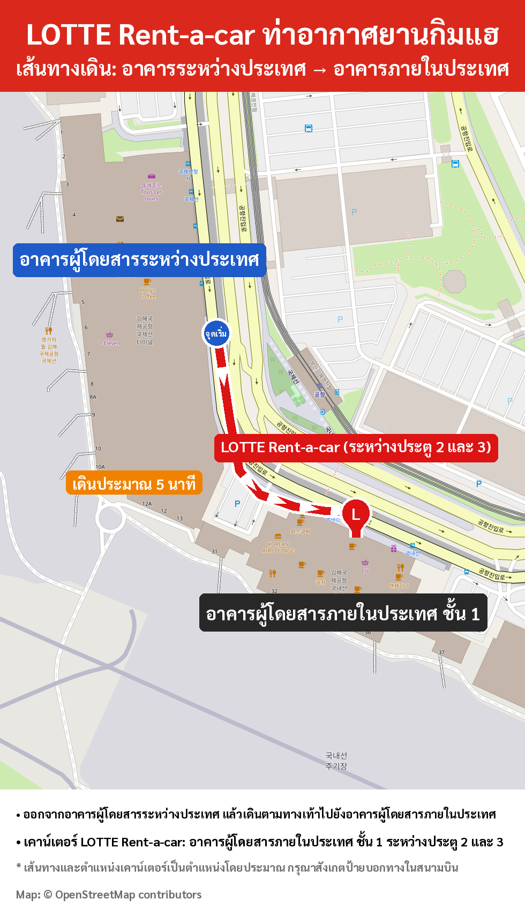

1จุดรับรถ
อาคารผู้โดยสารภายในประเทศ ชั้น 1 (ขาเข้า)
เคาน์เตอร์อยู่ระหว่างประตู 2 และประตู 3
เดินประมาณ 5 นาทีจากอาคารผู้โดยสารระหว่างประเทศ
2เอกสารที่ต้องนำมา (ฉบับจริงเท่านั้น)
- หนังสือเดินทาง – สำหรับยืนยันตัวตน
- ใบอนุญาตขับรถระหว่างประเทศ (ใบขับขี่สากล/IDP) ที่ยังไม่หมดอายุ – โปรดตรวจสอบวันหมดอายุและประเภทรถ:
- ประเภท B: รถที่มีที่นั่งผู้โดยสารไม่เกิน 8 ที่
- ประเภท D: รถที่มีที่นั่งผู้โดยสารมากกว่า 8 ที่
3ก่อนเดินทางมาถึง
โปรดแจ้งหมายเลขเที่ยวบินขาเข้า (เช่น KE1234) โดยตอบกลับอีเมลของเรา
⚡ บริการรับรถด่วน
ส่งสำเนาสแกนหนังสือเดินทางและใบขับขี่สากลมาล่วงหน้า เพื่อการรับรถที่รวดเร็วและสะดวก!
สอบถาม: สาขาท่าอากาศยานกิมแฮ
534046@lotte.net